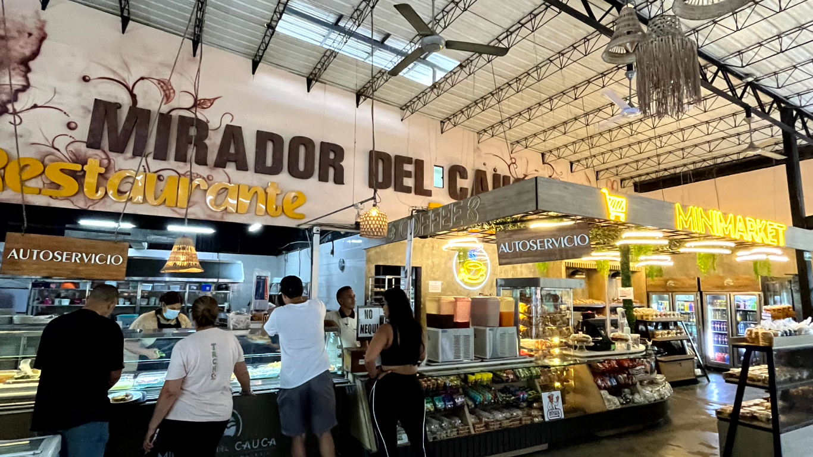
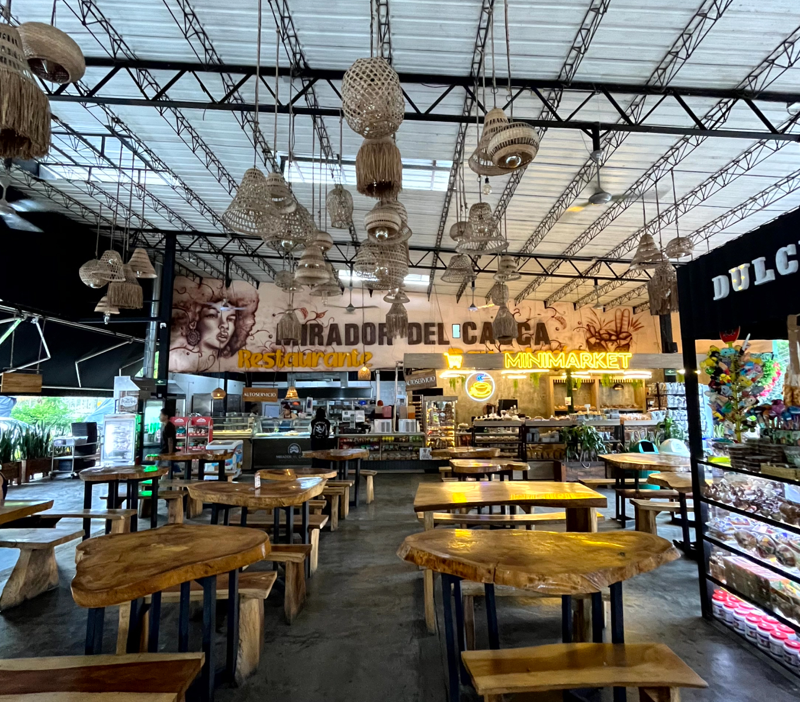
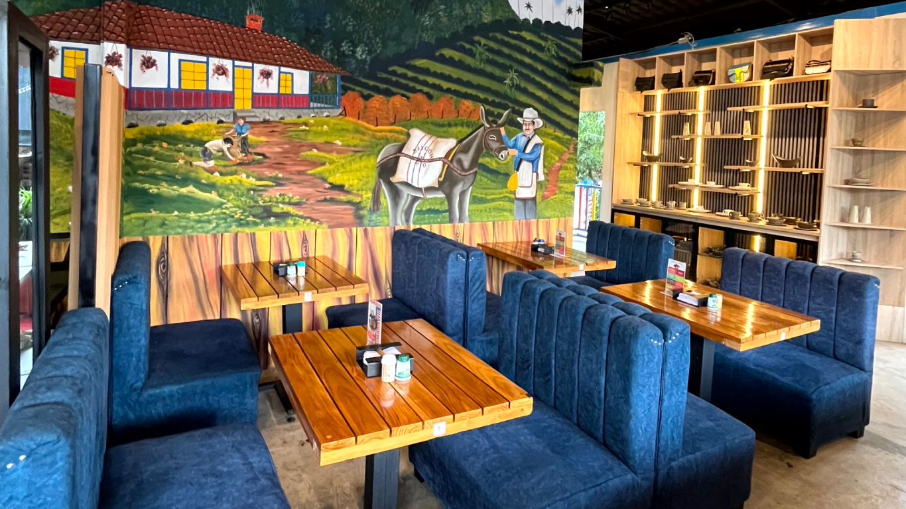
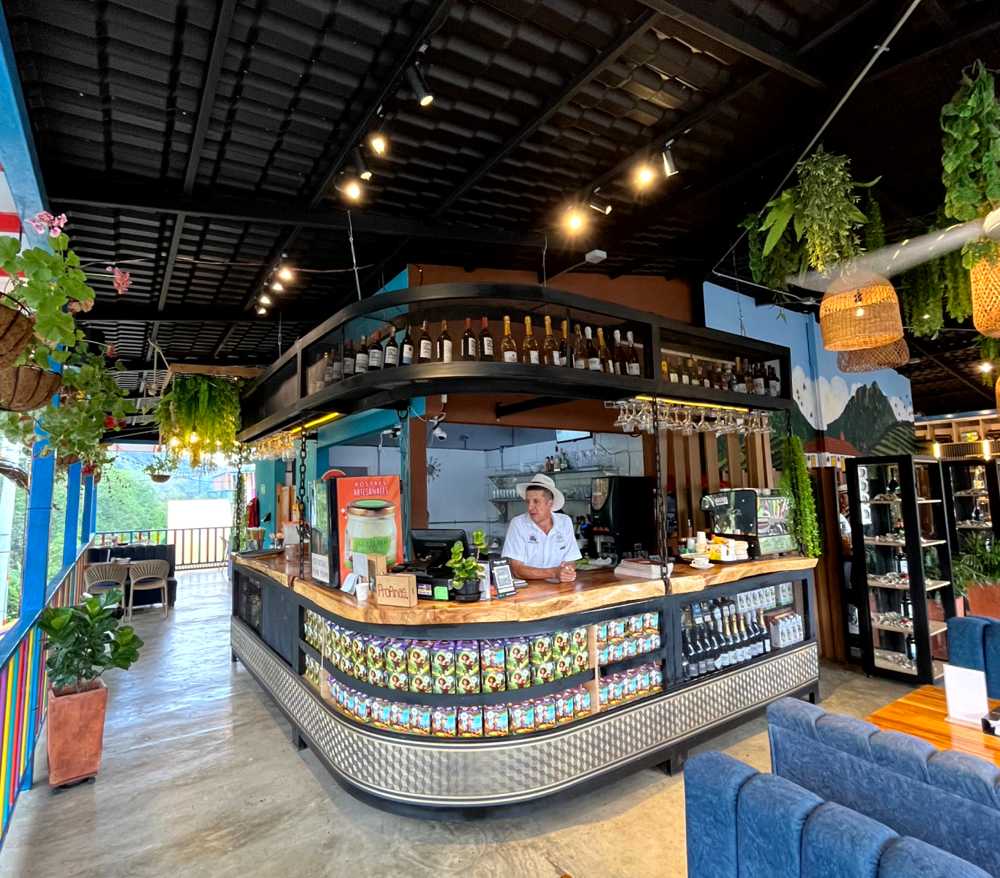
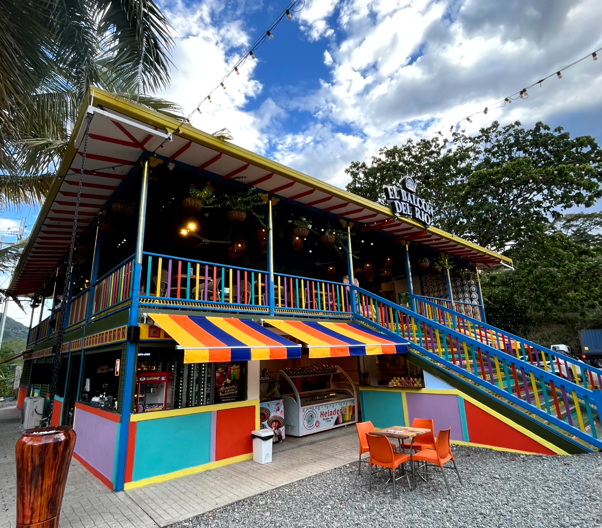
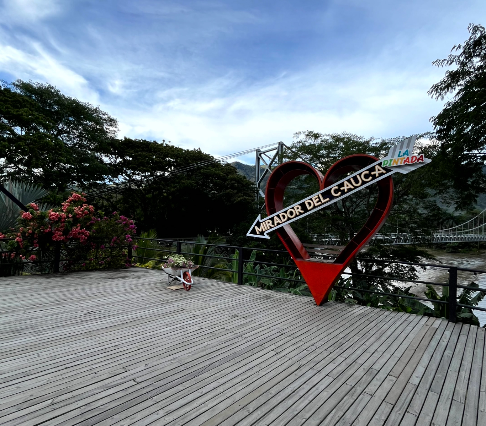
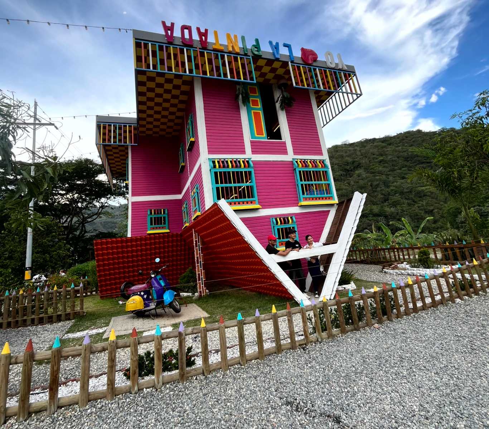
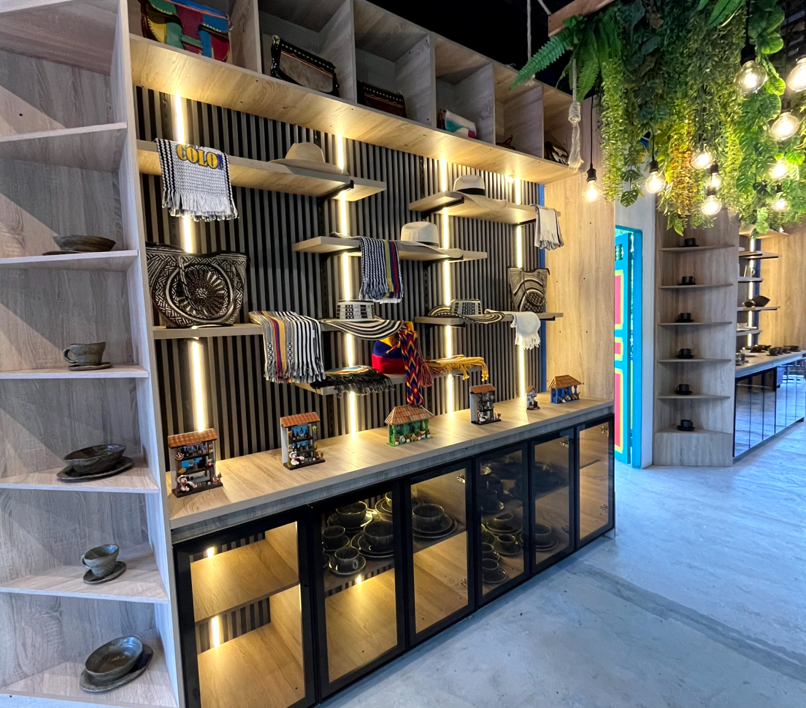

Arraigados en
la Tradición
Mucho más que un restaurante — una parada mágica llena de sabor en el corazón de Antioquia.
Mucho más que un restaurante
En Mirador del Cauca ofrecemos a cada visitante una parada mágica llena de sabor, donde la tradición culinaria y la hospitalidad antioqueña se encuentran en un solo lugar. Nos hemos convertido en el refugio favorito de los viajeros que buscan sabor, frescura y un momento de descanso inolvidable.
6AM
Apertura diaria
7
Días a la semana
+10
Servicios en un solo lugar
Gastronomía
Sabores Auténticos
La riqueza culinaria de Antioquia, preparada cada día con los mejores ingredientes de la región.

Buffet Abundante
Una amplia selección de los favoritos de la región — bandeja paisa, sancocho, fritanga y mucho más.

A la Carta
Platos elaborados con ingredientes locales.

Bar & Café
Café colombiano de origen, cócteles y bebidas.
Lo que encontrarás
Servicios para el Viajero
Todo lo que necesitas para una parada perfecta, en un solo lugar.

Restaurante con Balcón
Disfruta una vista espectacular desde nuestro colorido balcón mientras saboreas lo mejor de la cocina antioqueña. Una experiencia que combina gastronomía y paisaje.

El Mirador del Cauca
Tómate una foto en nuestro icónico corazón con vista al río Cauca. La parada perfecta para descansar y llevarte un recuerdo único de La Pintada.
Wi-Fi Gratis
Parqueadero
Baños Limpios
Zonas al Aire Libre
Experiencias únicas
Atracciones Turísticas
Más allá de la gastronomía, descubre las atracciones que hacen de Mirador del Cauca un destino completo.

La Casa al Revés
Una atracción única donde todo está de cabeza — la experiencia más divertida e instagrameable de La Pintada.
La Casa al Revés
Una arquitectura imposible que desafía la gravedad. Perfecta para fotos memorables y divertirse en familia.
El Corazón del Cauca
Nuestro icónico corazón rojo con vista al puente colgante y el río Cauca. El punto fotográfico más famoso de La Pintada.
Murales y Arte
Decoración artística y murales que cuentan la historia de Antioquia en cada rincón del lugar.
Artesanías & Recuerdos
Almacén de Souvenirs
Llévate un pedazo de Antioquia. Nuestro almacén ofrece artesanías, productos típicos, sombreros vueltiaos, mantas y recuerdos únicos elaborados por artesanos locales.
- checkroom Sombreros y accesorios típicos colombianos
- storefront Artesanías en cerámica y madera
- local_cafe Café y productos gourmet de la región
- card_giftcard Dulces y conservas artesanales

Visítanos
Encuéntranos en La Pintada
Convenientemente ubicados sobre la vía Medellín–La Pintada. Tu parada perfecta en el camino.
Dirección
Vía La Pintada – La Felisa
La Pintada, Antioquia, Colombia
Horario de Atención
Abierto todos los días
Restaurante: 6:00 AM – 10:00 PM
Almacén y atracciones: 7:00 AM – 9:00 PM
Contacto
+57 300 000 0000